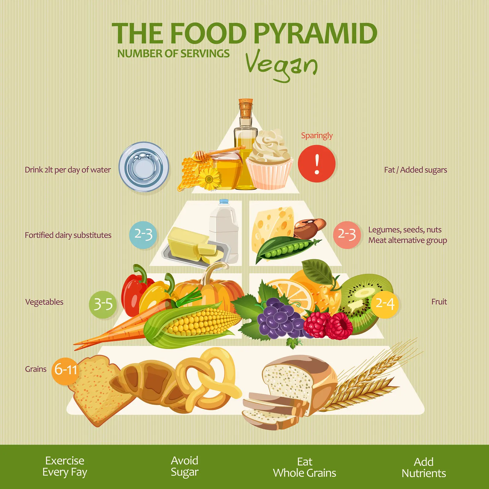
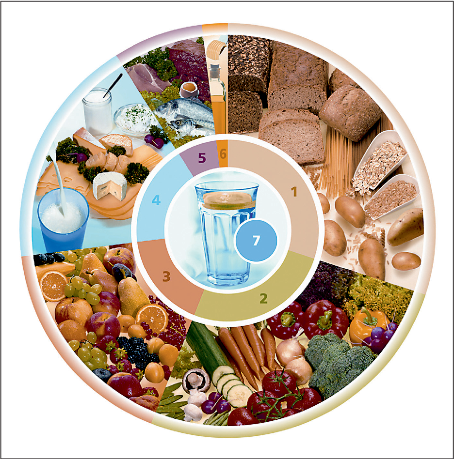
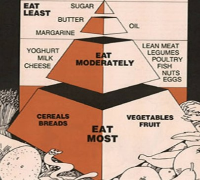

1 / 3

Explore our collection of images showcasing the journey to a healthier lifestyle. From nutritious meals and fun workouts to relaxing sleep routines and community events, these moments capture the essence of a balanced living.
2 / 3

At the center, you'll find a reminder of the importance of hydration, represented by a glass of water and milk. surrounding it are various food categories, including whole grains, proteins, dairy, fruits, and vegetables, each depicted with vibrant images of fresh produce, bread, nuts, and other wholesome foods. This chart serves as a simple guide to making healthy choices, ensuring you get a well-rounded diet filled with essential nutrients. Whether you're meal planning or looking for inspiration to eat healthier, this food wheel is here to help!.
3 / 3

At the base, labeled "EAST MOST,"you'll find essential staples like cereals, breads, vegetables, and fruits--foods rich in fiber, vitamins, and minerals that should form the foundation of your diet. Moving up, the "EAT MODERATELY" section includes dairy products like yogurt, milk, and cheese, along with lean meats, legumes, poultry, fish, nuts, and eggs. these provide necessary proteins and fats but should be eaten in controlled portions. At the top, the "EAT LEAST" section features sugar, butter, margarine, and oils. These should be consumed sparingly to maintain a healty lifestyle.